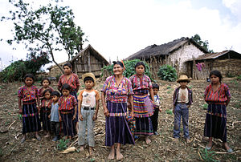

Ireland
An alive and charming place, where traditions and communality are important in everyday life.

An alive and charming place, where traditions and communality are important in everyday life.
The Irish have a unique sense of humor – a bit sarcastic, but never malicious. Whether it's a funny joke, an ironic observation, or just a fun conversation over a pint of beer – laughter is a part of everyday life here. If you can join in on the jokes and aren't afraid to be teased with a smile – you're halfway Irish!

In Ireland, it's normal to greet people while walking down the street, even if you don't know them at all. It could be a simple "Hi," "How's it going?" or just a nod with a smile. In smaller towns or villages, you can't avoid it – if you don't greet someone, people might think something's wrong with you!
The weather in Ireland is so unpredictable that you can experience all four seasons in one day. It's a perfect reason to talk about it constantly! Rain, sun, wind – everything can change in minutes, so simply saying "Typical Irish weather, isn't it?" will get you a conversation partner.

The Irish don't like to boast about their achievements or take themselves too seriously. Even if someone accomplishes something great, you'll often hear: "Ah sure, it was nothing!" Modesty is considered good manners here, and overly confident people often get a good dose of humor from those around them.

The Irish simply love a good story and music! Whether it's live music at the pub or a long tale about someone's "family history," storytelling is highly valued here. If you ever find yourself at an Irish party, it's likely someone will start singing a folk song, and everyone around will happily join in.

Imbolc is celebrated on February 1st, an ancient Celtic festival marking the beginning of spring and dedicated to the goddess Brigid.
St. Patrick's Day is celebrated on March 17th, honoring St. Patrick, the patron saint of Ireland, with parades and the tradition of wearing green.
Bank Holidays are public holidays typically observed on Mondays, dedicated to rest and the rights of workers.

St. Stephen's Day, celebrated on December 26th, is traditionally observed with parades and charity events.
Here’s some often used phrases in Ireland! These phrases will help you not to get lost during conversations. However, use them with cautions, because if you get carried away, it can come across as rude.
Meaning: a boring, uninteresting person.
Usage: "Stop being a dryshite and join the fun!”
This is a slightly teasing but friendly term.
A tip! If you say this to someone you don’t know well, they might take offense!
Meaning: funny, hilarious, enjoyable.
Usage: "That lad is gas, I couldn’t stop laughing!”
The Irish like to use "gas” to describe people or situations that are funny.
A tip! While "gas” means funny, it doesn’t mean "stupid” – it’s more of a compliment than an insult.
Meaning: "How are you doing?”, "How’s it going?”
Usage: "She did the extra work, she’s a keener.”
This phrase is mostly used in rural areas of Ireland.
A tip! If you say this in the city, people may be surprised, but they’ll still understand!
Meaning: "How are you?”, "What’s new?”
Usage: "What’s the story, mate?”
This is a very popular greeting in Ireland, used with friends or even strangers.
A tip! It’s not a literal question about a story – people are just waiting for a quick answer about how you’re doing.
Meaning: "No way”, "You’re kidding me.”
Usage: "I won the bet!” – "G’way outta that!”
This is a friendly phrase often used when surprised or joking.
A tip! It’s not just an expression of disbelief – sometimes people say it jokingly when something annoys them.
Meaning: fooling, joking, kidding.
Usage: "Calm down, I’m only coddin’ ya!”
This is often said with a smile when someone is joking around.
A tip! If someone says "I’m only coddin’ ya,” don’t take it seriously!
Meaning: acting foolish, causing trouble.
Usage: "Stop acting the maggot and behave!”
This can be a friendly reproach used for kids or friends.
A tip! If someone says you’re "acting the maggot,” it means you’re being silly or misbehaving.
Meaning: going out to drink alcohol (at a party).
Usage: "We’re heading out on the lash!”
This is a very Irish phrase, used when talking about a big party.
A tip! If you say this at a job interview, you might get some strange looks!
Meaning: beer, alcoholic drinks.
Usage: "I’ll grab some scoops before going back.”
This is an informal way to talk about drinks, mostly used by young people.
A tip! It’s a very informal word, and if you say it to strangers, they might not understand. Better to use it with friends and people who know Irish slang well.
Meaning: guy, friend, mate, pal.
Usage: "He’s a good fella, always helps out.”
Often used when talking about men or friends, but can also be used for any person.
A tip! It’s a very informal term used for older or male friends, but in some cultures, it can be considered disrespectful. Better to use it only with familiar people.
Meaning: grandfather, father, older person.
Usage: "The oul fella’s at home waiting.”
Use this phrase when talking about older people, especially family members.
A tip! This can be a very warm and affectionate way to talk about older family members, but it might be inappropriate to use it about strangers.
Meaning: "Everything is going smoothly.”
Usage: "I got it now, now we’re suckin’ diesel!”
Use this when things start to go well or when the situation improves.
A tip! This phrase is often used in a friendly tone, but it might be misunderstood outside Ireland, as it’s a part of the Irish dialect. Use it only with close friends.
Meaning: complaining, scolding, nagging.
Usage: "She’s giving out about the service again.”
This can refer to both small complaints and more serious reproaches.
A tip! Although this is not an offensive term, it can be seen as complaining. Be careful not to sound overly critical or dissatisfied.
Meaning: bad, poor quality, unpleasant.
Usage: "That’s a poxy excuse for not showing up.”
Use this when you want to say something is bad or disappointing.
A tip! If you use "poxy,” be careful – it can be considered insulting, so avoid using it with strangers.
Meaning: thing, object (sometimes even a person).
Usage: "Pass me that yoke over there.”
"Yoke” can refer to both a physical object and a situation, person, or event.
A tip! Often used in informal conversations, but can be unclear if talking about a specific item.
Meaning: very, extremely, intensely.
Usage: "That party was fierce fun!”
"Fierce” is often used to express a high degree of something.
A tip! Not to be confused with its literal meaning! In Irish slang, it means something is impressive or extreme, not scary.
Reikšmė: gaivieji gėrimai (pvz., Coca-Cola).
Panaudojimas: "I would like a mineral with that, please."
Tai labiau būdinga vyresnei kartai arba kaimiškoms vietovėms, bet vis dar naudojama.
Patarimas! Jei Airijoje paprašysite "soda", žmonės gali pagalvoti apie kepimo sodą!
Reikšmė: labai ilgas laiko tarpas, seniai.
Panaudojimas: "I haven’t seen you in yonks!"
"Yonks" dažniausiai naudojama, kai nori išreikšti, kad nebuvo matytas arba nesikalbėta su kažkuo labai ilgą laiką.
Patarimas! Tai labai populiari frazė tarp jaunimo, tačiau vyresni žmonės gali jos nesuprasti arba nenaudoti.


Here’s some things you should never do, if you want to blend in and avoid uncomfortable situations. Follow these A tips to make a great impression!
| Don't: | Why? | What to do instead: | |
|---|---|---|---|
| Complaining About the Weather | The weather in Ireland is often unpredictable, but complaining about it is not common. | If the weather isn't perfect, just accept it and enjoy your trip. |  |
| Asking About Leprechauns | Leprechauns are part of folklore, and constant questions about them can seem disrespectful. | It’s better to learn about Irish culture and history rather than ask about myths. |  |
| Not Understanding the A tipping System | A tipping is common in Ireland, but many people don’t know how much to leave. | Typically, leave 10-15% A tips if the service was good. |  |
| Asking for "Corned Beef and Cabbage" | This dish is not as popular as stereotypes may suggest. | Order local favorites like "Irish stew." |  |
| Disrespecting the Irish Language | The Irish are proud of their language, and while they often speak English, they appreciate efforts to learn their language. | If you're learning Irish, try to use it correctly and respect its beauty. |  |
| Not Buying Your Round at the Pub | The Irish value friendliness, and it’s important to buy your drinks when sitting at the pub with others. | Take care of your round and show gratitude. | |
| Taking Offense at Irish Jokes | The Irish love to joke and engage with a smile. They often make jokes about their country and culture. | Accept the humor with a smile, as the Irish often joke about themselves. |  |
| Arguing With Irish Taxi Drivers | The Irish can be straightforward, but that doesn’t mean they enjoy arguing. They also greatly respect their taxi drivers. | Be polite and calm, even if you disagree with the driver’s opinion. |  |
| Accepting the First Offer | The Irish can be polite and offer help, but they appreciate it when you politely refuse the first offer and only accept help later. | If someone offers help, politely decline, and then accept the help. |  |